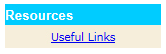
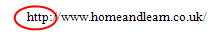
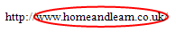
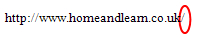

HTML Hyperlinks
Hyperlinks are the backbone of the Web. They provide a means to connect one piece of information (a web page, for example) to another piece of information. If you have designed two web pages, a hyperlink will provide a way to jump from one page to the other. If you have one long web page, a hyperlink can be used as a bookmark to help people jump from one part of the page to another, and back again. This is what a hyperlink looks like (the blue underlined text):

But let's discuss what happens when the link is clicked on.
What is a Hyperlink?
When you click a hyperlink to another website (assuming you are connected to the internet), this is what happens.
Your browser gathers the information about the link and sends the request to something called a naming server. The naming server translates the link text (www.homeandlearn.co.uk, for example) into a series of numbers. These numbers are called the IP address. These are needed because computers don't speak in a written language. So the computer needs something it can understand. An IP address is a set of four numbers separated by full stops (IP version 4). Each set of numbers is between 0 and 255. So when you click the link, the text address will be translated into an IP address, something like 213.209.156.97.
The IP address will be used to identify a particular computer. If the computer, usually the naming server, doesn't have the address in its database, it will pass the address further up the naming server food chain. If no naming server can find the IP address, the failure is passed back down to your browser. At this stage you'll probably see a 404 error message.
If the address is found, however, the IP address is sent to your browser. The browser then contacts the web server that has the web page you requested. The page is then sent to your browser. However, that's not the end because requests are done one at a time. If the web page has images, the browser will see this and then request that the images be brought back to the web page as well. One image at a time.
Uniform Resource Locator
A uniform resource locator, or URL, is commonly called an address. The URL of our web Page is http://www.homeandlearn.co.uk/. Let's break this down a bit.

http://
http stands for hypertext transfer protocol. A protocol is a set of standards
that one computer uses to speak to another. There are quite a lot of different
protocols. For web communications, the two most common protocols are hypertext
transfer protocol and file transfer protocol (FTP). There’s another layer of
protocols underneath this called Transmission Control Protocol/Internet Protocol
(TCP/IP). The http in a web address is followed by a colon and two forward slashes.

www.homeandlearn.co.uk
This is the Domain Name, the part that gets translated into an IP address. The
domain name is split into three parts, separated by full stops:
www The host name
homeandlearn The enterprise domain name
co.uk The top-level internet domain name. Others are .com (commercial),
.org (organisation), .gov (government)

/
If no html page is specified, the forward slash tells the server to look for
the default web page. This is usually index.html. The index.html page is one
that you have created. That’s why naming the first page of your internet site
index.html is so important.
The index.html Page
Your web site will probably have lots of individual web pages. Suppose somebody comes to your site for the first time. How does the browser know which of your many pages to load first? After all, your visitor may well have just typed this in the address bar:
www.homeandlearn.co.uk
The answer to the question is - "default page". When you buy web space with a web hosting company, you are given a folder to upload all your files. The hosting company will have already specified a default web page for that folder. This is usually index.html. So if somebody types the above address, the browser will look for the default page. You don't have to type this:
www.homeandlearn.co.uk/index.html
The browser already knows to serve up the default page. If you haven't uploaded
a page called index.html then your visitors may well get an error page when
going to your site. So it's important that you have a web page called index.html,
as this is the first page on your site your visitors will see when typing your
domain name into the browser's address bar.
OK, we've learnt what a link is, and what happens when you click one, but let's see how to create them.